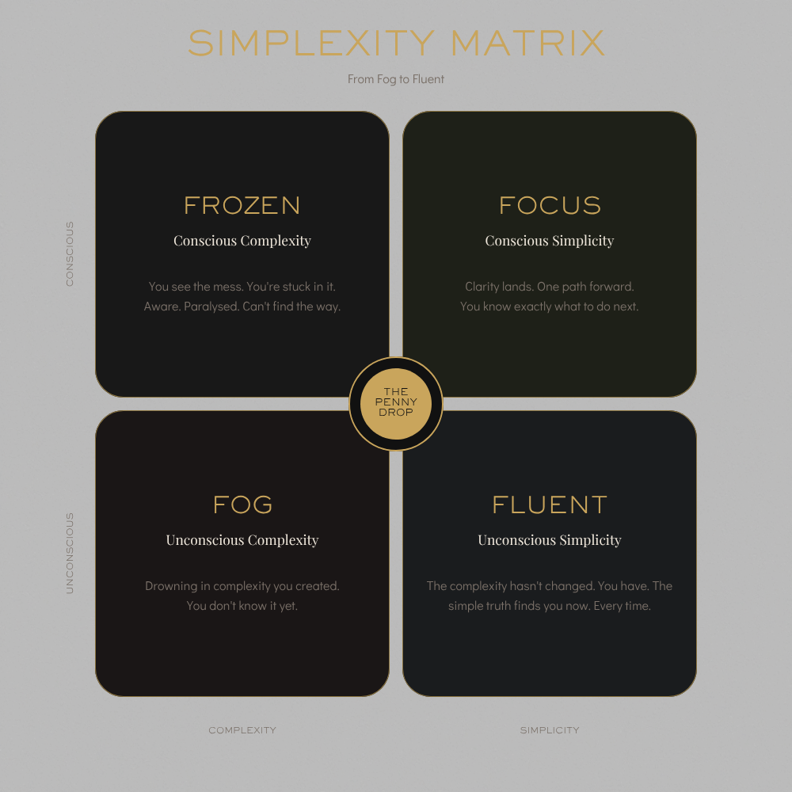

The moment
The penny
drop.
drop.
The moment the simple human truth becomes impossible to ignore — and the path forward becomes impossible to miss. You already knew it. Will shows you where to look.

Most leaders aren't dealing with genuine complexity. They're dealing with complexity they created themselves — without realising it. There's a name for that. And a cure.
Complexity is almost always a choice. So is clarity. The leaders who get this move faster, decide better, and leave every room with people who know exactly what to do next.
Finding the simple human truth inside any complex challenge — and using it to move people forward. Not dumbing down. Not cutting corners. Rigour that arrives at clarity. Will Turner has been doing this for 25+ years. He finally named it.
The complexity leaders create beyond what the situation actually requires — without knowing they're doing it. The meeting that justifies itself. The strategy deck that explains the strategy deck. The process nobody questions. Will Turner coined this term. It names the enemy.
The moment the simple human truth becomes impossible to ignore — and the path forward becomes impossible to miss. Recognition — not revelation. They always knew. Will just showed them where to look. It happens in every session, every room, every page.
"You are all about simplexity — making complex things simple. It is a real gift."
Helen — London, 2011 — 15 years before Will named itFrom Fog to Fluent
Two axes. Four states. Multiple paths. The entire body of work in a single image. Every leader starts somewhere. Will's job — in every session, every room, every page — is to move them from Fog to Focus.

Will moves leaders from Fog (unconscious complexity) to Focus (conscious simplicity) — across the matrix. The penny drop is the moment of crossing. Fluent is what comes after — the complexity hasn't changed; you have. The simple truth finds you now. Every time.
The moment the simple human truth becomes impossible to ignore — and the path forward becomes impossible to miss. You already knew it. Will shows you where to look.
Ashby's Law of Requisite Variety (1956) — a system needs exactly as much complexity as the situation requires. No more. Unconscious complexity is a violation of this law. Will Turner is the person who democratises Ashby for leaders who've never heard of him — and uses it to show them precisely where their complexity is costing them.
Three steps. Every time. In every session, every room, every page.
Every business challenge has a universally human truth at its centre. The Chinese restaurant menu. The too-long email. The meeting everyone attends and nobody needs. Start there — because that's where the room meets you.
Once the human truth is visible, the business application is inevitable. The same psychology that makes you freeze at 200 menu items is creating the paralysis in your strategy process. The simple answer was always in there.
The moment a room changes. Recognition, not revelation — they already knew it. Will shows them where to look. It's not new information. It's remembering something true they lost access to. That's why it lands so hard. And why it lasts.
This isn't intuition. Every quadrant is backed by a body of peer-reviewed research. Will Turner is the practitioner who makes it accessible — depth for the room, not the site.
Kahneman's WYSIATI — "What You See Is All There Is." System 1 has normalised the complexity so completely that leaders can't see it. Cognitive Load Theory (Sweller) confirms performance degrades once demands exceed working memory — but the person under load rarely knows it. McKinsey's research shows 33% of transformation value is lost here.
Paradox of Choice (Schwartz) — the leader sees the mess but awareness without a path creates paralysis. Decision Fatigue research shows sustained exposure to complexity degrades the quality of every subsequent decision. The frozen leader typically responds by adding more process. Ashby says the answer is the right variety, not more variety.
Klotz & Nature (2021) — landmark finding that subtractive thinking requires active invitation. The penny drop is precisely that invitation. Dual Process Theory (Kahneman): the penny drop is a System 2 intervention that overrides the System 1 additive default. It feels obvious in retrospect — recognition, not revelation.
Csíkszentmihályi's Flow — effortless performance where complexity has been internalised. Ashby's Law in perfect equilibrium. The challenge: Status Quo Bias and Escalation of Commitment mean most leaders never reach Fluent — there is no direct path from Fog to Fluent. You must pass through Focus first.
Whether you need a keynote, a coach, or a trusted voice in the room — start with a conversation.